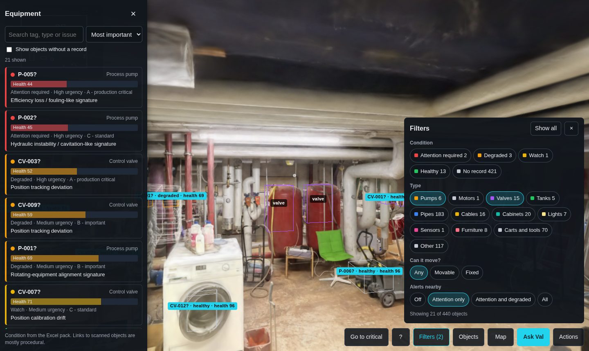
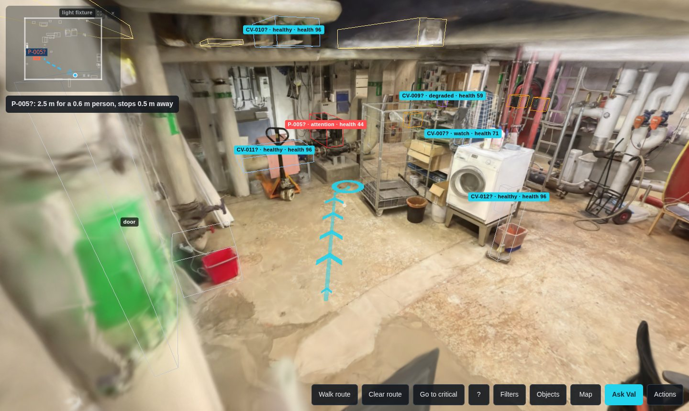
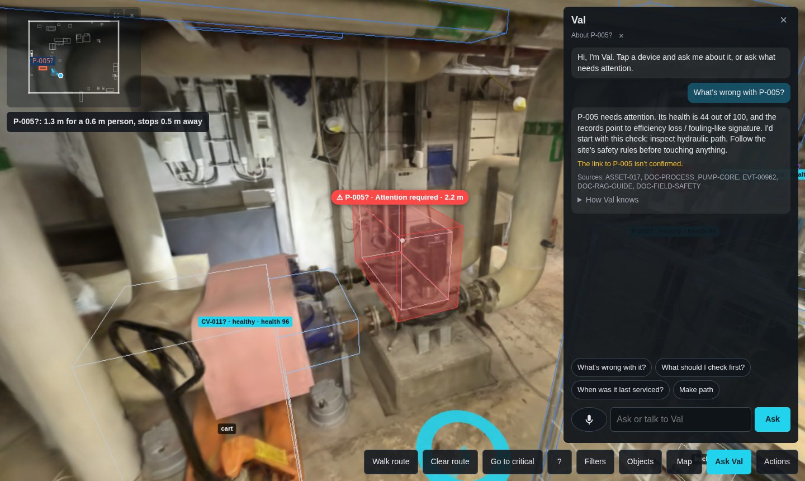
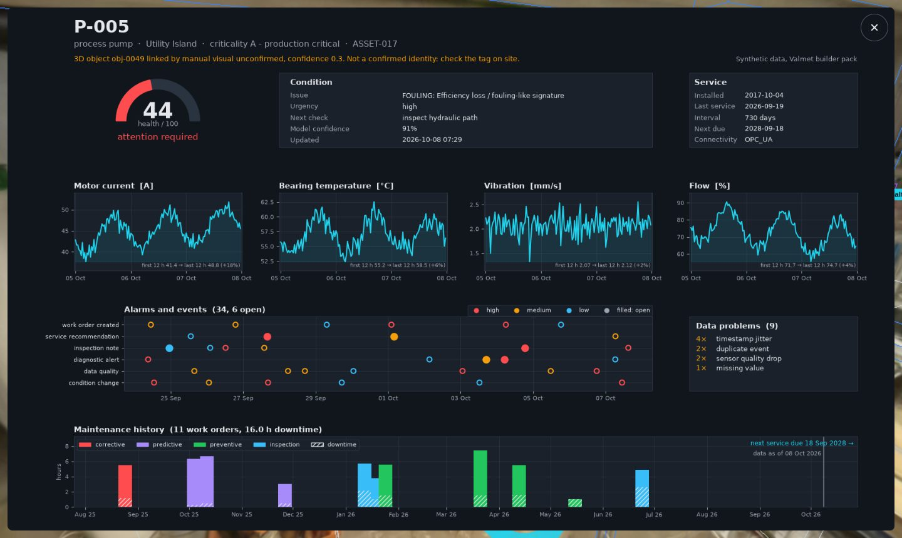
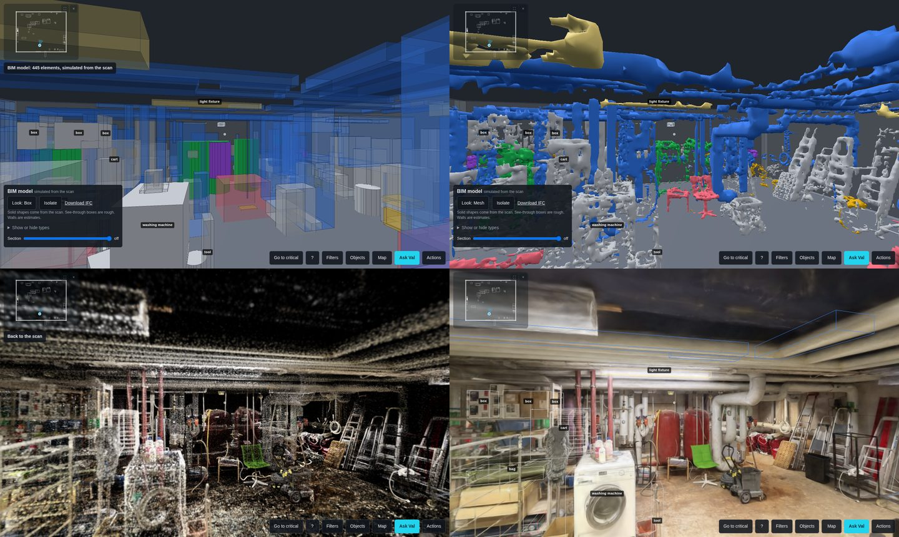

Since AI Hackathon 2026, Valmet’s Industrial Metaverse challenge
When a machine in a plant room starts failing, the technician sent to fix it first has to find it, get to it safely, and piece together what’s wrong from drawings, maintenance records and manuals. VAL turns one 3D scan of the room into a digital twin that knows what’s in it, where you can walk, and what the records say about each machine. Everything runs on one laptop with no internet, so the plant’s data never leaves the site.
Each object in the room gets a frame coloured by its type. Equipment with a record shows its condition and health, and anything that needs attention glows as you approach it. Filters narrow the room by type, condition or whether an object can move, and the equipment list puts the most urgent first.

One button plans a route to the device that needs attention most, around walls, machines and anything that has been moved. A minimap shows where you are and where you’re going, and the equipment you pass on the way shows its status.

When you arrive, the assistant, Val, explains the fault: the device’s health, the likely cause, what to check first and the safety steps, citing the record IDs it used. You can ask follow-up questions by typing or talking, such as when the device was last serviced or how its sensors are trending. Val also controls the view: “show only pumps”, “take me to P-005”, “move the cart 2 metres left”.
Every device’s full record also opens as a dashboard, with its health, sensor trends, alarms and maintenance history.


The same room can be shown five ways: empty, a simple BIM model of fitted shapes, a rougher model built from the scan’s surfaces, the raw point cloud, and the real scan. The BIM model exports to IFC, which CAD and BIM tools read, and the floor plan exports to DXF.

Objects can be moved, turned, copied, split or deleted with the mouse, the keyboard, touch or by asking Val. The scanned object itself moves, not just its frame: its points are cut out of the scan and the floor underneath is filled in. A move into a wall or a machine is refused with the reason, the route updates around the new layout, and every change can be undone.
A scan has no objects in it, only 1.7 million coloured blobs. VAL renders 700 views of it, SAM 3 cuts every view into object masks, and matching the masks across views turns 22,671 masks into 440 objects, each a set of the scan’s own points with a 3D box. This takes about 26 minutes on one GPU.
A Qwen vision-language model running locally names each object from several views: pump, valve, pipe and so on. The names were then checked against close-up screenshots to correct the clear mistakes.
The plant’s records describe each device but not where it is, so each record is placed on an object of the right kind: a pump record on a pump, never on a broom. Every link stores how it was made and how sure it is, and the twin never claims an identity it doesn’t know.
A floor map is built from the scan in 5 cm cells, recording how much room there is at body height for a 0.6 m-wide person, or low down for a small robot. Routes are planned with A* and stop where the device is in view. Moving an object blocks its new spot and frees its old one, and the route updates while you drag.
Code looks up every fact first and checks each ID, tag and number. A small language model on the laptop only puts those facts into words, and without one Val still answers from templates. Safety rules refuse anything that would operate the plant or skip a safety step. Speech is recognised on the laptop with faster-whisper.
A FastAPI backend serves routes, move checks, Val and the exports. The viewer runs in any browser with three.js and Spark, which draws the scan, and it lowers its resolution on weak graphics, so it runs on a laptop without a graphics card. A tablet or phone on the same network can open it too.
SAM 3, Qwen VLM, 3D Gaussian splatting, faster-whisper, a local small language model, FastAPI, three.js and Spark, with IFC and DXF export.
Built in a weekend at the Since AI Hackathon 2026 for Valmet’s Industrial Metaverse challenge, on Valmet’s scan of a boiler room and a sample set of 30 equipment records.